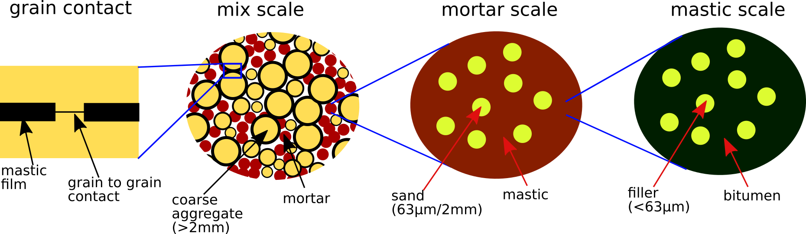
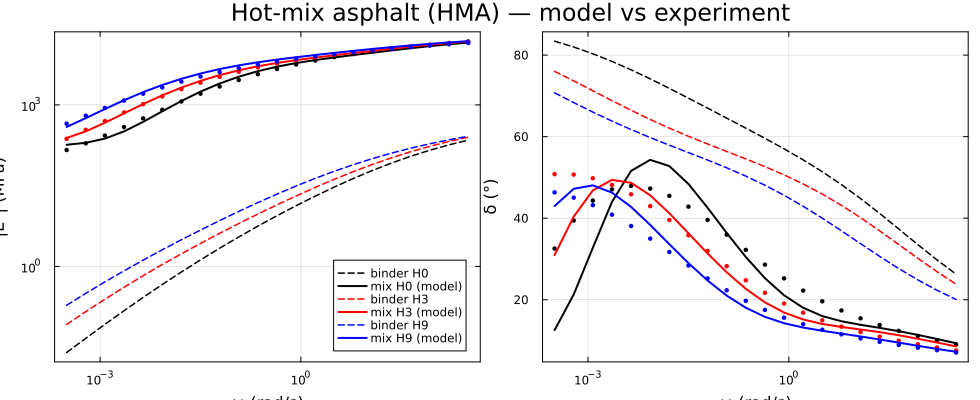
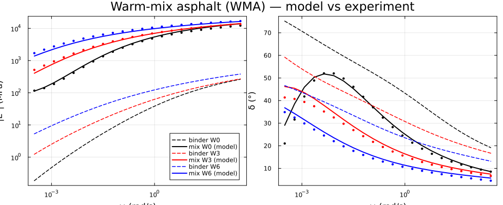

Viscoelastic complex modulus of a bituminous mixture
This chapter homogenizes the complex modulus $E^*(\omega)$ of a bituminous mixture through three nested scales, following [48] and mirroring the corresponding chapter of the Echoes book [42]. The bitumen is viscoelastic (2S2P1D model); the mineral phases are elastic. Because every MeanFieldHom scheme is ComplexF64-safe, the frequency-domain correspondence principle is applied by simply running the homogenization with complex-valued stiffnesses.
| Scale | RVE | Phases | Scheme |
|---|---|---|---|
| 1 | Mastic | bitumen matrix + fillers | Mori-Tanaka |
| 2 | Mortar | mastic matrix + sand | Mori-Tanaka |
| 3 | Full mix | mortar matrix + coated coarse aggregates + pores | Self-Consistent |

The coarse aggregates are coated grains — a stiff core wrapped in a thin mastic film — represented by a two-layer LayeredSphere that enters the self-consistent scheme through its concentration tensors (the composite-sphere support introduced for the cement-paste chapters, here with complex moduli).
2S2P1D binder model
The bitumen complex Young's modulus in the Laplace domain ($p = i\omega$):
\[E^*(p) = E_0 + \frac{E_\infty - E_0} {1 + \delta\,(p\tau_E)^{-k} + (p\tau_E)^{-h} + (p\beta\tau_E)^{-1}}.\]
using MeanFieldHom
using TensND
using LinearAlgebra
using Plots
gr() # headless backend; GKSwstype is set to "100" in make.jl
struct Mod2S2P1D
E0::Float64; Einf::Float64; δ::Float64; τE::Float64; k::Float64; h::Float64; β::Float64
end
(m::Mod2S2P1D)(p) = m.E0 + (m.Einf - m.E0) /
(1 + m.δ * (p * m.τE)^(-m.k) + (p * m.τE)^(-m.h) + 1 / (p * m.β * m.τE))
# Hot-mix asphalt (HMA) — binders and experimental mix curves, ageing H0/H3/H9
E_BH0 = Mod2S2P1D(1e-7, 1000.0, 2.2, 1.94507827e-3, 0.22, 0.63, 50.0)
E_BH3 = Mod2S2P1D(1e-7, 1000.0, 2.12, 2.88910275e-3, 0.22, 0.611998586, 146.0)
E_BH9 = Mod2S2P1D(1e-7, 1000.0, 2.85, 7.07911122e-3, 0.22, 0.61430255, 178.0)
E_EH0 = Mod2S2P1D(86.3470095, 26000.0, 2.52254414, 0.834764484, 0.22, 0.65, 43.3031679)
E_EH3 = Mod2S2P1D(20.0, 24362.0, 2.6, 2.6604, 0.199, 0.65, 900.0)
E_EH9 = Mod2S2P1D(20.0, 24470.541, 2.73135009, 4.95748334, 0.175991713, 0.60, 900.0)
# Warm-mix asphalt (WMA) — binders and experimental mix curves, ageing W0/W3/W6
E_BW0 = Mod2S2P1D(1e-7, 1000.0, 3.12, 9.49532017e-3, 0.22, 0.608684147, 101.0)
E_BW3 = Mod2S2P1D(6.81e-6, 1000.0, 4.2, 3.209694e-2, 0.22, 0.55078753664, 393.0)
E_BW6 = Mod2S2P1D(2.1e-4, 1000.0, 4.6, 3.78112337e-1, 0.22, 0.555320631, 808.0)
E_EW0 = Mod2S2P1D(100.0, 21071.0, 2.4, 0.95, 0.207, 0.62, 9.45)
E_EW3 = Mod2S2P1D(57.0, 20974.0, 2.6, 7.3168, 0.199, 0.59, 900.0)
E_EW6 = Mod2S2P1D(100.0, 22290.0, 2.6, 89.095, 0.199, 0.59, 900.0)Composition and volume fractions
The mix formula (mass fractions of the granular skeleton, bitumen mass fraction, and air voids) is converted to volume fractions through the phase densities.
compo_agg = Dict("6/10" => 0.2752, "4/6" => 0.1617, "2/4" => 0.1474,
"sand" => 0.32285, "fines" => 0.0872)
size_agg = Dict("6/10" => 8.15, "4/6" => 5.15, "2/4" => 3.0) # mean diameter (mm)
fmas = Dict{String,Float64}("bitume" => 0.054)
fvol0 = Dict{String,Float64}("pore" => 0.06)
ρ = Dict{String,Float64}(a => 2670.0 for a in keys(compo_agg))
ρ["bitume"] = 1040.0
for a in keys(compo_agg)
fmas[a] = (1 - fmas["bitume"]) * compo_agg[a]
end
vtot = sum(fmas[a] / ρ[a] for a in keys(fmas))
for a in keys(fmas)
fvol0[a] = (1 - fvol0["pore"]) * fmas[a] / ρ[a] / vtot
end
Dict(a => round(f, digits = 4) for (a, f) in fvol0)Dict{String, Float64} with 7 entries:
"4/6" => 0.1332
"6/10" => 0.2267
"sand" => 0.266
"pore" => 0.06
"bitume" => 0.1207
"fines" => 0.0718
"2/4" => 0.1214Three-scale complex homogenization
The contact parameters $(\alpha, \chi, k_t)$ set the mastic-film thickness (Duriez law), the mixing between pure mastic and a contact-stiffened film, and the film out-of-plane stiffness. Given a binder model, the function returns $p \mapsto E^*(p)$. The coated aggregates are the complex two-layer LayeredSphere; the mix is closed with the self-consistent scheme.
const mod_agg, nu_agg, β0 = 9.5e4, 0.17, 0.51
const un = 1.0 + 0.0im
function Ehom(X, E_b)
α, χ, kt = X
Cagg = un * iso_stiffness_E_nu(mod_agg, nu_agg)
fl = copy(fvol0)
fmastic = fl["bitume"] + fl["fines"]
e_film = Dict(a => α * 61.3e-3 * (size_agg[a] * 0.5)^β0 for a in keys(size_agg))
ffilm = sum(fl[a] * ((1 + e_film[a] / (size_agg[a] * 0.5))^3 - 1) for a in keys(size_agg))
fl["mastic_rest"] = fmastic - ffilm
for a in keys(size_agg)
fl[a] *= (1 + e_film[a] / (size_agg[a] * 0.5))^3
end
k_B = 2500.0
μ_B(p) = 3k_B / (9k_B / E_b(p) - 1)
function f(p)
Cb = iso_stiffness(ComplexF64(k_B), μ_B(p))
# Scale 1 — mastic (MT)
fmastic_ = fl["bitume"] + fl["fines"]
m = RVE(:bitume; T = ComplexF64)
add_matrix!(m, Ellipsoid(1.0), Dict(:C => Cb))
add_phase!(m, :fines, Ellipsoid(1.0), Dict(:C => Cagg); fraction = fl["fines"] / fmastic_)
Cmastic = homogenize(m, MoriTanaka(), :C)
# Scale 2 — mortar (MT)
fmortar = fl["mastic_rest"] + fl["sand"]
r = RVE(:mastic_rest; T = ComplexF64)
add_matrix!(r, Ellipsoid(1.0), Dict(:C => Cmastic))
add_phase!(r, :sand, Ellipsoid(1.0), Dict(:C => Cagg); fraction = fl["sand"] / fmortar)
Cmortar = homogenize(r, MoriTanaka(), :C)
# Scale 3 — full mix (SC) with coated aggregates
v = RVE(:mortar; T = ComplexF64)
add_matrix!(v, Ellipsoid(1.0), Dict(:C => Cmortar))
for a in keys(size_agg)
ka, _ = k_mu(Cagg)
Cfilm = χ * Cmastic + (1 - χ) * iso_stiffness(ka, ComplexF64(e_film[a] * kt))
ra = size_agg[a] * 0.5
sphere = LayeredSphere((ra, ra + e_film[a]), (Cagg, Cfilm))
add_phase!(v, Symbol(a), sphere, Dict(:C => Cagg); fraction = fl[a])
end
add_phase!(v, :pore, Ellipsoid(1.0), Dict(:C => un * TensISO{3}(0.0, 0.0));
fraction = fl["pore"])
return E_nu(homogenize(v, SelfConsistent(; abstol = 1e-10, maxiters = 100), :C))[1]
end
return f
endThe pre-calibrated contact parameters (from the COBYLA fit of the least-aged state in [42] — the calibration itself is not repeated here) are used directly. A check against the Echoes reference at four frequencies:
x_HMA = (5.866e-3, 0.9760, 6366.1)
Ef = Ehom(x_HMA, E_BH0)
for ω in (1e-3, 1e-1, 1e1, 1e2)
z = Ef(im * ω)
println("ω = ", rpad(ω, 7), " |E*| = ", rpad(round(abs(z), digits = 1), 9),
" MPa δ = ", round(rad2deg(angle(z)), digits = 2), "°")
endω = 0.001 |E*| = 223.7 MPa δ = 29.75°
ω = 0.1 |E*| = 3113.9 MPa δ = 37.92°
ω = 10.0 |E*| = 9082.9 MPa δ = 14.05°
ω = 100.0 |E*| = 12572.3 MPa δ = 11.13°These reproduce the Echoes values (|E*| ≈ 224 / 3114 / 9083 / 12572 MPa, δ ≈ 29.8 / 37.9 / 14.1 / 11.1°) to the SC convergence tolerance.
Contact-parameter calibration
The three contact parameters $(\alpha, \chi, k_t)$ are calibrated by minimizing the relative distance between the multi-scale model and the experimental master curve of the least-aged state,
\[J(\alpha,\chi,k_t) = \sum_\omega \left|1 - \frac{E_{\rm mod}(i\omega)}{E_{\rm 2S2P1D}(i\omega)}\right|^2,\]
subject to inequality constraints keeping the fit acceptable for the more-aged states. [48] perform this minimization with a derivative-free COBYLA routine; the resulting parameters are used directly here (the objective above can be minimized with any optimizer — e.g. NLopt or Optim — but the calibration is not repeated in this page). The calibrated sets are
x_HMA = (5.866e-3, 0.9760, 6366.1) # J = 4.10e-1
x_WMA = (4.165e-2, 0.9791, 3277.7) # J = 2.39e-1Master curves: binder amplification across ageing states
For each ageing state the binder stiffness (dashed) is amplified by roughly three decades to the mix modulus (solid); the mix phase angle stays below the binder's, reflecting the stiffening by the rigid granular skeleton. Markers are the experimental 2S2P1D master curves. The same plot_mix helper is reused for the hot-mix (HMA) and warm-mix (WMA) asphalts.
ωs = 10.0 .^ range(-3.5, 2.5; length = 22)
cols = (:black, :red, :blue)
function plot_mix(x_opt, states, title)
pE = plot(; xscale = :log10, yscale = :log10, xlabel = "ω (rad/s)",
ylabel = "|E*| (MPa)", legend = :bottomright, framestyle = :box)
pδ = plot(; xscale = :log10, xlabel = "ω (rad/s)", ylabel = "δ (°)",
legend = false, framestyle = :box)
for ((name, E_b, E_e), c) in zip(states, cols)
Em = Ehom(x_opt, E_b)
plot!(pE, ωs, [abs(E_b(im * ω)) for ω in ωs]; ls = :dash, c = c, lw = 1.5, label = "binder $name")
plot!(pE, ωs, [abs(Em(im * ω)) for ω in ωs]; c = c, lw = 2, label = "mix $name (model)")
scatter!(pE, ωs, [abs(E_e(im * ω)) for ω in ωs]; c = c, ms = 2.5, markerstrokewidth = 0, label = "")
plot!(pδ, ωs, [rad2deg(angle(E_b(im * ω))) for ω in ωs]; ls = :dash, c = c, lw = 1.5)
plot!(pδ, ωs, [rad2deg(angle(Em(im * ω))) for ω in ωs]; c = c, lw = 2)
scatter!(pδ, ωs, [rad2deg(angle(E_e(im * ω))) for ω in ωs]; c = c, ms = 2.5, markerstrokewidth = 0)
end
return plot(pE, pδ; layout = (1, 2), size = (980, 400), plot_title = title)
end
plot_mix(x_HMA, (("H0", E_BH0, E_EH0), ("H3", E_BH3, E_EH3), ("H9", E_BH9, E_EH9)),
"Hot-mix asphalt (HMA) — model vs experiment")
plot_mix(x_WMA, (("W0", E_BW0, E_EW0), ("W3", E_BW3, E_EW3), ("W6", E_BW6, E_EW6)),
"Warm-mix asphalt (WMA) — model vs experiment")
In both mixes the ageing states shift the master curve toward higher stiffness and lower phase angle as the binder hardens — the model tracks the experimental curves across the whole frequency range with a single calibrated parameter set per mix.